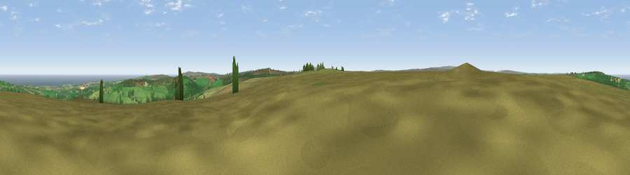

Flat Howe
#2072 in England · top 9% of its area beats it · near EskdalesideThe view, rendered

A 360° render of this exact spot computed from the terrain model, tree cover and land cover — summer colours, afternoon light, calibrated against photographs of famous viewpoints. Real trees, hedges and buildings will differ in detail.
The panorama
Grey silhouette: terrain skyline in each direction (720 bearings, Earth curvature and refraction included). Dashed green: skyline with trees (+15 m) and buildings (+8 m) as obstacles. Blue strip: how far the ground is visible on each bearing.
Where the view opens
Wedge length = distance to the farthest visible ground on that bearing (vegetation-aware). Rings at 10, 25 and 50 km.
What fills the view
55% grassland · 19% woodland · 17% water · 5% cropland · 2% built-up
Angular shares of the visible panorama (visual magnitude), not map area. Landscape diversity 0.51 (0–1 Shannon).
Key numbers
More beautiful places nearby
The staircase of upgrades: each row has a higher view potential than everything closer. Driving times are estimates from straight-line distance, calibrated against real road routing — check an actual route before setting out.
| Place | Direction | Drive | Score |
|---|---|---|---|
| Viewpoint near Eskdaleside | NW · 0 km | ~1 min | 78.4 |
| Viewpoint near Eskdaleside | NNW · 1 km | ~3 min | 80.7 |
| Viewpoint near Fylingthorpe | E · 8 km | ~15 min | 81.1 |
| Viewpoint near Fylingthorpe | E · 8 km | ~16 min | 82.3 |
| Viewpoint near Robin Hood's Bay | E · 9 km | ~18 min | 83.3 |
| Viewpoint near Ravenscar | ESE · 11 km | ~21 min | 90.0 |
| Viewpoint near Easington | NW · 19 km | ~32 min | 90.2 |
| The Knoll | SSW · 437 km | ~411 min | 91.0 |
54.43205, -0.68271 · source: osm viewpoint · position refined by local search. Computed location — check access rights before visiting.